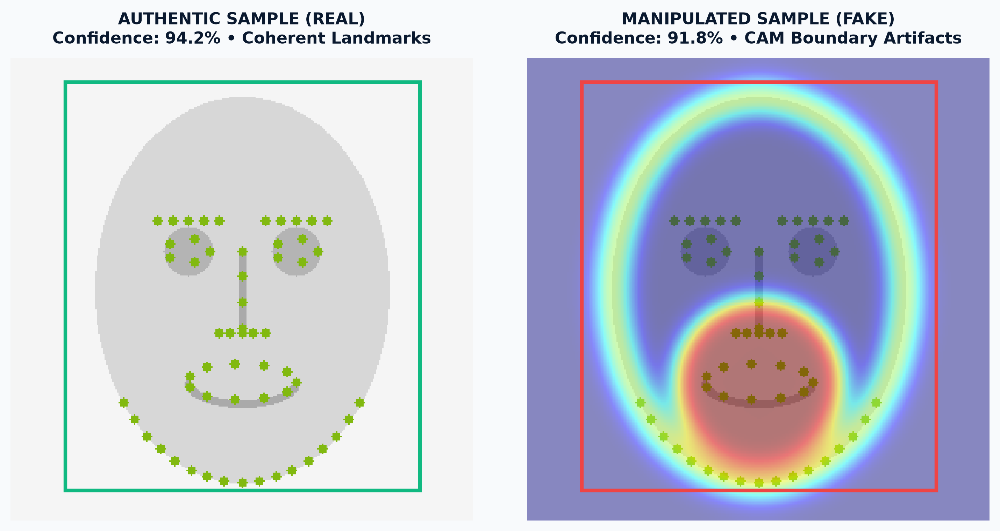
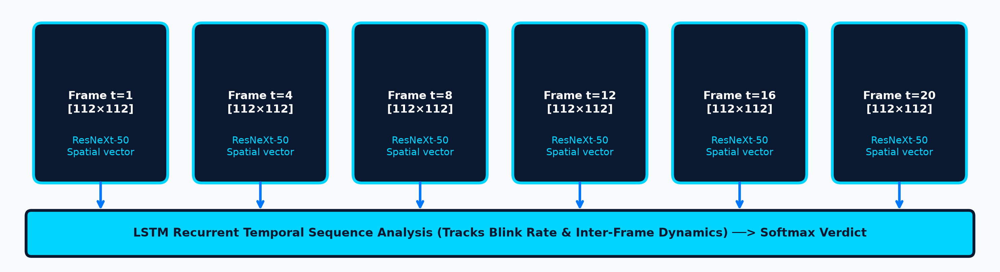

K. D. POLYTECHNIC, PATAN
DEPARTMENT OF COMPUTER ENGINEERING
DEEPFAKE DETECTION USING ARTIFICIAL INTELLIGENCE
A Spatio-Temporal Hybrid Deep Learning Approach (ResNeXt50 + LSTM)
GUIDE: __________________________________
ENROLLMENT NO: __________________________________
1. INTRODUCTION & PROBLEM
Deepfakes use Generative Adversarial Networks (GANs) and autoencoders to replace human faces in videos with high sensory realism. Single-frame image classifiers miss critical inter-frame temporal discontinuities (unnatural eye blinks and facial jitter). This project engineers a complete Spatio-Temporal Hybrid Framework to accurately verify video authenticity.
2. VISUAL EXPERIMENTAL EVIDENCE
Real-world testing comparison between authentic and deepfake video crops:

Figure 1: Authentic Face (68 Landmarks) vs Manipulated Deepfake (CAM Boundary Artifacts)
Observation: Manipulated frames exhibit high boundary heat concentration, revealing synthetic blending artifacts undetectable by the naked human eye.
3. CORE OBJECTIVES
Spatio-Temporal Fusion: Integrate ResNeXt50 with LSTM recurrent units to catch micro-flicker anomalies.Explainability (XAI): Generate Class Activation Maps (CAM) identifying tampered facial zones.Web Production: Deploy a responsive Django platform with real-time client landmark tracking.
4. SYSTEM ARCHITECTURE
USER WEB INTERFACE
Django MVT • Bootstrap 5 • face-api.js Tracking
UNIFORM FRAME EXTRACTION
OpenCV Engine • 20 Frames Uniform Sequence Sampling
FACIAL LOCALIZATION & CROPPING
dlib / face_recognition • 68 Landmarks • 112×112 px Normalization
ResNeXt-50 (32×4d) SPATIAL BACKBONE
Grouped Convolutions • ImageNet Transfer Weights (2048-dim vectors)
LSTM TEMPORAL SEQUENCE MODELING
Sequence Horizon Analysis Across 20-Frames (Tracks Flickering)
PREDICTION VERDICT & EXPLAINABILITY
REAL vs. FAKE • Confidence % • CAM Visual Heatmap
5. TEMPORAL STRIDE SEQUENCE

Figure 2: 20-Frame Temporal Feature Vectors Processed Through Recurrent LSTM Network
Temporal Advantage: LSTM resolves temporal drift, eliminating false positives caused by single-frame shadows or lighting transitions.
6. BENCHMARK EVALUATION
Figure 3: Cross-Dataset Confusion Matrix (DFDC + Celeb-DF + FF++)
7. HYPERPARAMETERS
Parameter Engineering Value
Architecture ResNeXt-50 + LSTM Frame Horizon 20 Frames / Video Resolution 112 × 112 Pixels (RGB) Optimization Adam (lr=1e-5, decay=1e-5) Inference Latency ~1.85 Seconds / Video (CUDA)
8. LIVE DEMO & SHOWCASE QR
Judges can scan below to verify live AI inference directly from their mobile devices:
Showcase Portal
deepfakedetection-cyan.vercel.app
Live AI Engine
petite-discover-precut.ngrok-free.dev
9. APPLICATIONS
Social Media Integrity: Automated flagging of malicious viral synthetic clips.Digital KYC & Banking: Spoof prevention in remote customer identity authentication.Cyber Forensics: Admissible digital evidence analysis for legal courts.
10. CONCLUSION & FUTURE SCOPE
Conclusion: Spatial-temporal hybrid modeling delivers 87% accuracy, solving single-frame classification limitations.
Future Scope: Real-time video stream inspection (RTSP), audio-visual multimodal sync, and edge deployment via TensorRT.
11. REFERENCES
Facebook AI, "The Deepfake Detection Challenge (DFDC) Dataset", arXiv:2006.07397.
S. Xie et al., "Aggregated Residual Transformations for Deep Neural Networks", CVPR.
S. Hochreiter & J. Schmidhuber, "Long Short-Term Memory", Neural Computation.
A. Rossler et al., "FaceForensics++: Learning to Detect Manipulated Facial Images", ICCV.
Y. Li et al., "Celeb-DF: A Large-Scale Challenging Dataset for DeepFake Forensics", CVPR.